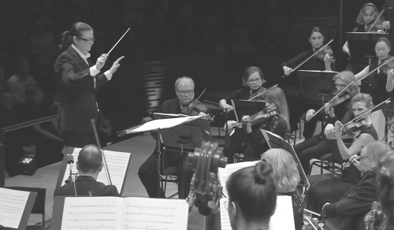

アーケード (2020)
for orchestra
3232, 3321, 4perc, hp, pf, cel, electronics, strings
Duration: 20min.
The title refers to a “game center (Japanese-English)“. This work is an orchestral piece that depict texture, modeled on the state of space in amusement environment such as arcades, pachinko halls (in 2020) symbolically.
This is a roaring environment crowded with background music that once abounded in Japan. The space as a whole tends to be closed off to the ear, or avoided as a sound, and not heard well. Stronger! louder! The individual elements that are required to attract people are gathered and condensed there, and it is difficult to listen to each sound carefully. But it is a space where they coexist. In the music, I used as symbols the musical language of equal temperament, triads, countable beats and grooves, which have spread widely throughout the world since the modern era, and a lot of sound effects found in like video games and daily life. I lay them on top of each other randomly without giving consideration to the different voices, and observe the way they overlap to capture them with affection.
題名は「ゲームセンター（和製英語）」を指す。本作はゲーセンパチンコホールなどアミューズメント施設における空間の状態をモデルに、質感を象徴的に織り成していく管弦楽曲である。
かつて日本国内に溢れていたBGMがひしめき合う轟音環境。総体としては耳を閉じられがちで、或いは音として避けられ、よく聞かれない空間。より強く、より大きな音で。人々を魅きつけることが求められる個体がそこには集合し凝縮されていて、音を一つ一つ丁寧に聴くことは難しい。でも不思議と共存している空間。楽曲中には、近代以降世界中に広く普及した平均律、三和音、グルーヴ、効果音などの音楽言語を記号として使用した。音のかたまりと音のかたまり、異なる声に対して配慮せずにランダムに重ねられたそれらのその重なり方を聴いて観測していく。
commissioned by SUNTORY HALL
created in Tokyo, Aug.26.2020
by Yoichi Sugiyama cond, Yomiuri Nippon Symphony Orchestra
Anna-Maria Helsing conductor, Finnish Radio Symphony Orchestra
Musica nova Helsinki 10.Mar.2023